Há vozes que, mesmo depois da despedida, não se apagam. Atravessam o invisível, o tempo e a ausência, e continuam ecoando.
Edney Fernandes foi uma dessas vozes. Um artista que transformava sentimentos em melodia, cotidiano em poesia e memória em canção.
Este projeto é um reencontro entre passado e futuro: um espaço para preservar sua obra, apresentar sua trajetória e abrir caminho para novas vozes.
Alcance & Relevância
A permanência da obra
O catálogo de Edney Fernandes continua ativo no imaginário coletivo, em plataformas digitais, repertórios de intérpretes e no circuito afetivo do samba e do pagode.
+6Mde visualizações em interpretações das músicas do catálogo44obras registradas oficialmenteAnos 90–Hojepresença contínua no samba e pagode brasileiro
Catálogo em Editoras e Entidades
ABRAMUS|SONY MUSIC|WARNER MUSIC|PEER MUSIC|ABRAMUS|SONY MUSIC|WARNER MUSIC|PEER MUSIC
Trajetória & Colaborações
Presença na música brasileira
Entre projetos fonográficos, rodas de samba, estúdio e encontros artísticos, Edney Fernandes construiu uma trajetória viva dentro da música popular brasileira e do universo que seguimos reconhecendo como samba e pagode até hoje.
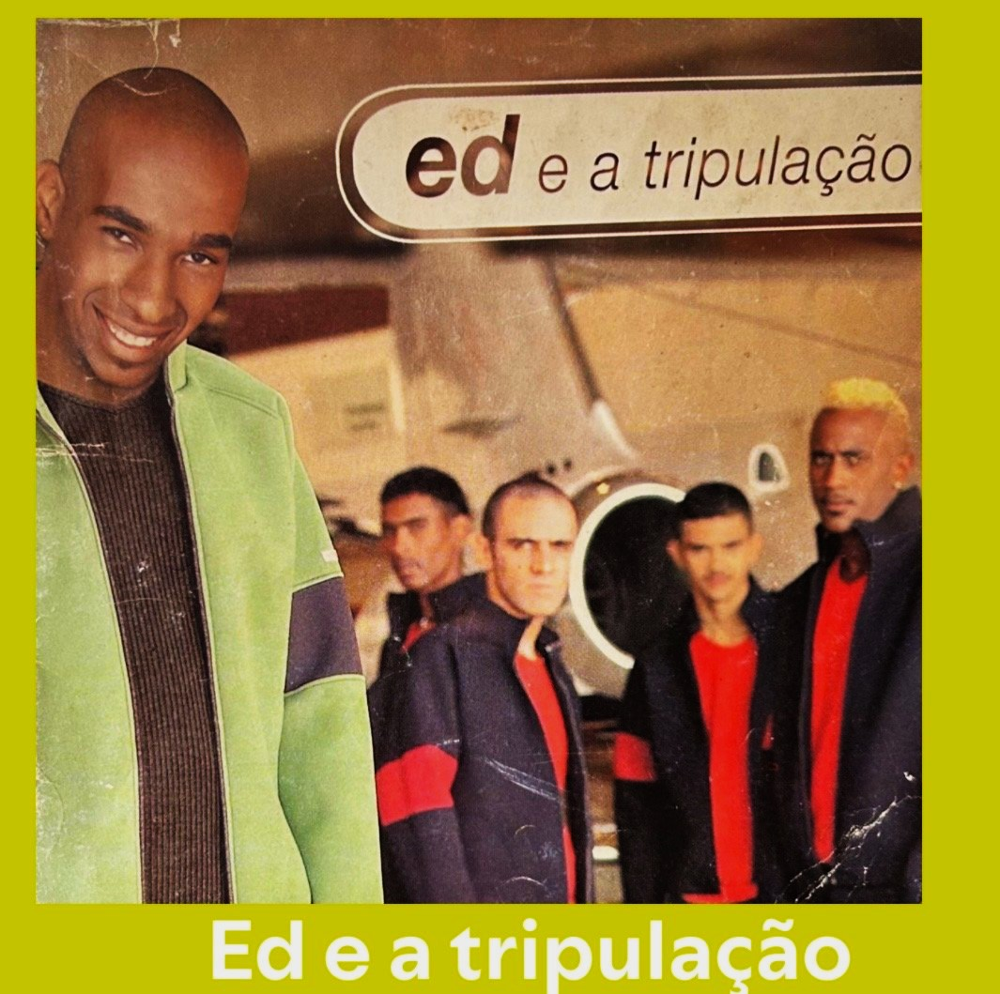
Ed & A Tripulação
Um projeto marcante do pagode paulista, com repertório, identidade e presença própria dentro da história do gênero.
Gesto de Carinho
Projeto póstumo que prolonga a presença da obra e abre novas possibilidades para o catálogo de Edney Fernandes.
Parcerias & Colaborações
Ao longo de sua trajetória, Edney Fernandes esteve em contato com artistas, produtores, compositores e músicos que ajudaram a construir uma memória viva da música brasileira, entre eles Marcelo Lombardo, Lula Lafayette, Bete Carvalho e outros nomes ligados ao samba e ao pagode.
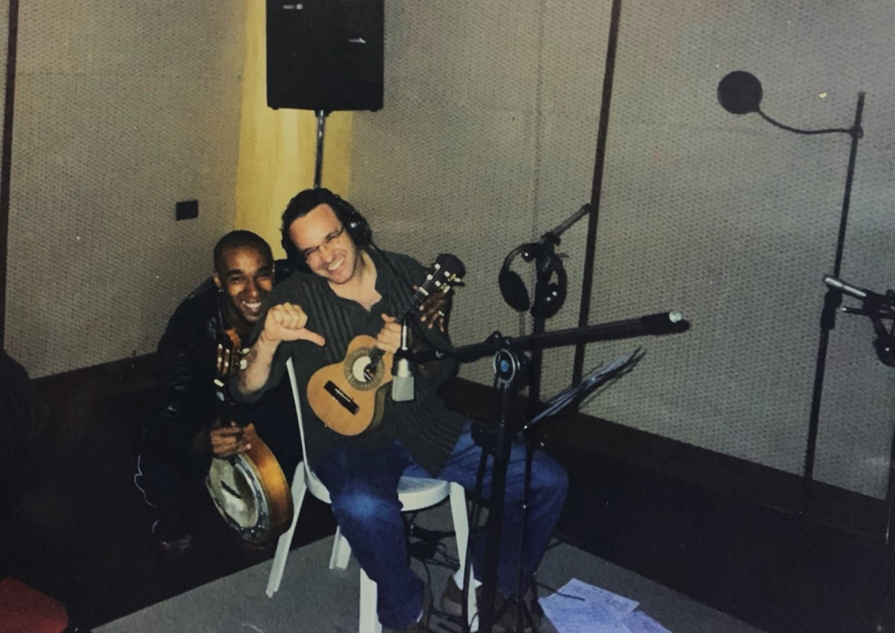
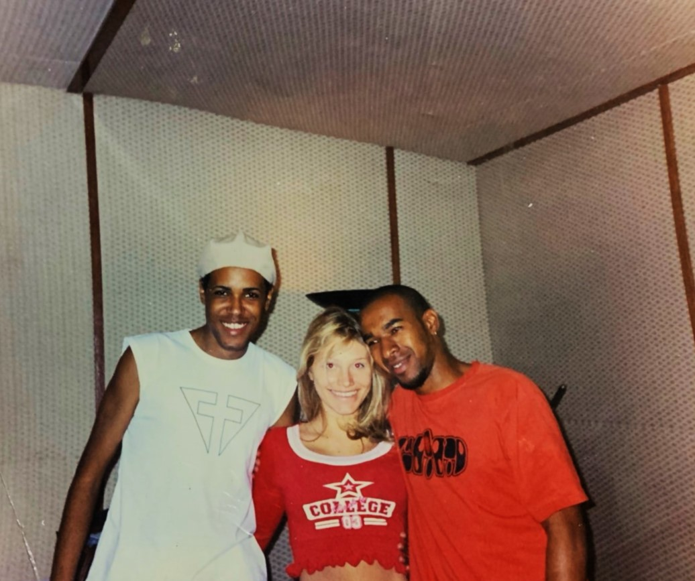
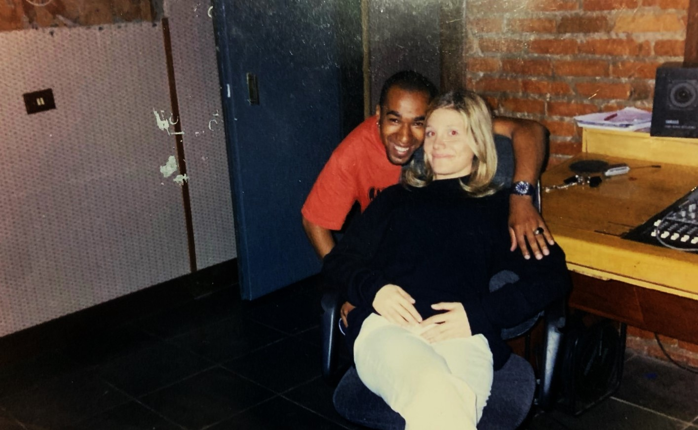
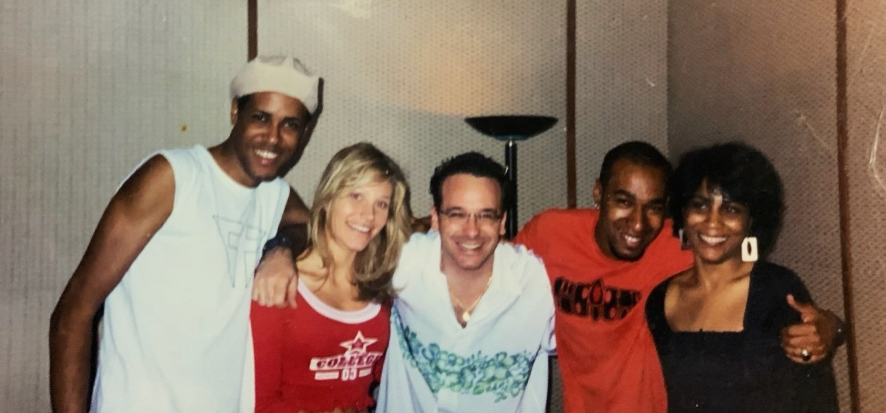
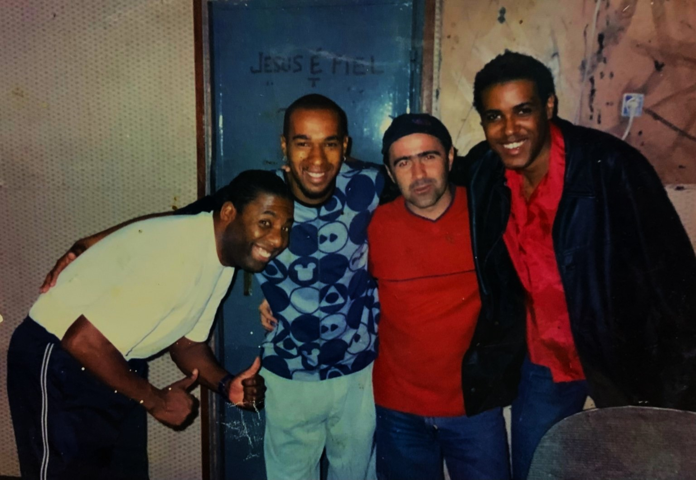
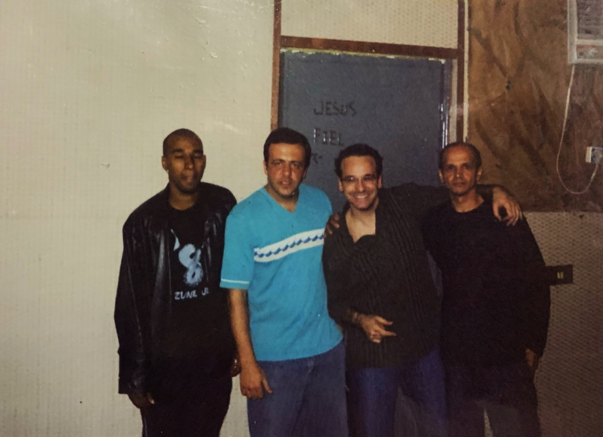
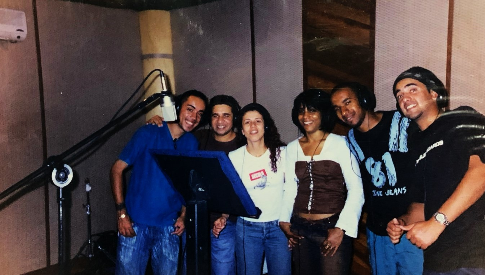
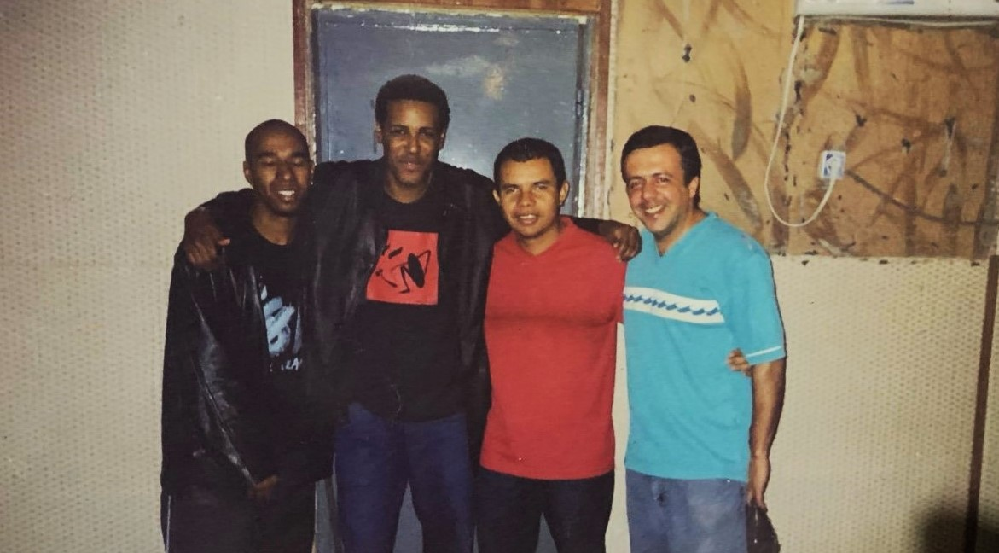
Grandes Intérpretes
Canções que seguiram vivas em outras vozes
Obras autorais interpretadas por artistas relevantes do samba e do pagode brasileiro.
ExaltasambaPériclesThiaguinhoChrigorKarametadeGrupo PercepçãoImaginasambaKipaqueraGrupo Mi MenorExaltasambaPériclesThiaguinhoChrigorKarametadeGrupo PercepçãoImaginasambaKipaqueraGrupo Mi Menor
Projetos que marcaram a trajetória
Projetos que marcaram a trajetória
Entre grupo, projeto fonográfico e álbum póstumo, a trajetória de Edney Fernandes segue organizada em obras que preservam sua presença artística.
Discografia
Ed & A Tripulação
Projeto central da trajetória, com repertório que segue vivo no universo do samba e do pagode.
Este catálogo reúne composições que fizeram parte de uma geração e seguem tocando até hoje, prontas para ganhar novas leituras, gravações e caminhos de interpretação.
Um repertório vivo, com identidade própria, presença histórica e potencial para circular novamente na voz de novos artistas.
Grave uma obra
Conheça composições disponíveis, possibilidades de licenciamento e caminhos de interpretação do catálogo de Edney Fernandes.
Uma seleção de músicas para apresentar a atmosfera, a linguagem e a memória afetiva do catálogo de Edney Fernandes.
Presenças que permanecem
Fragmentos íntimos de uma trajetória que continua viva.
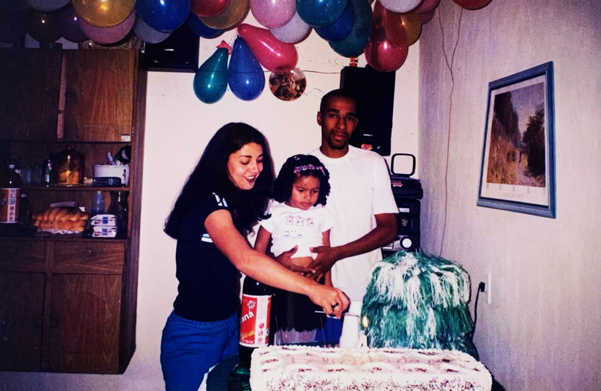
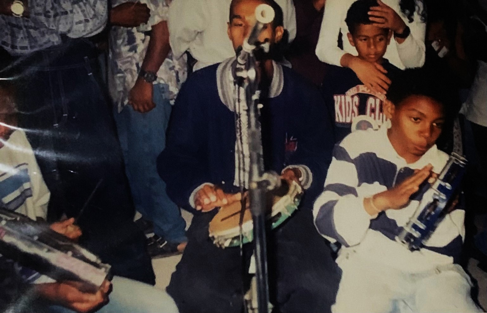
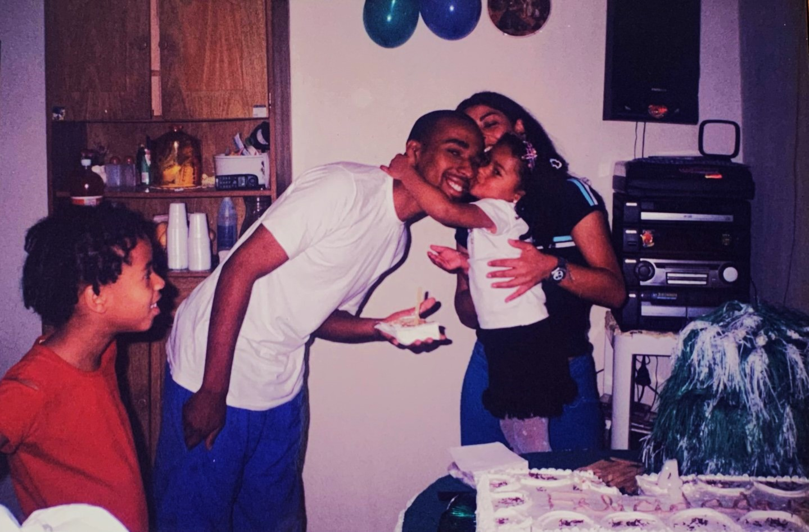
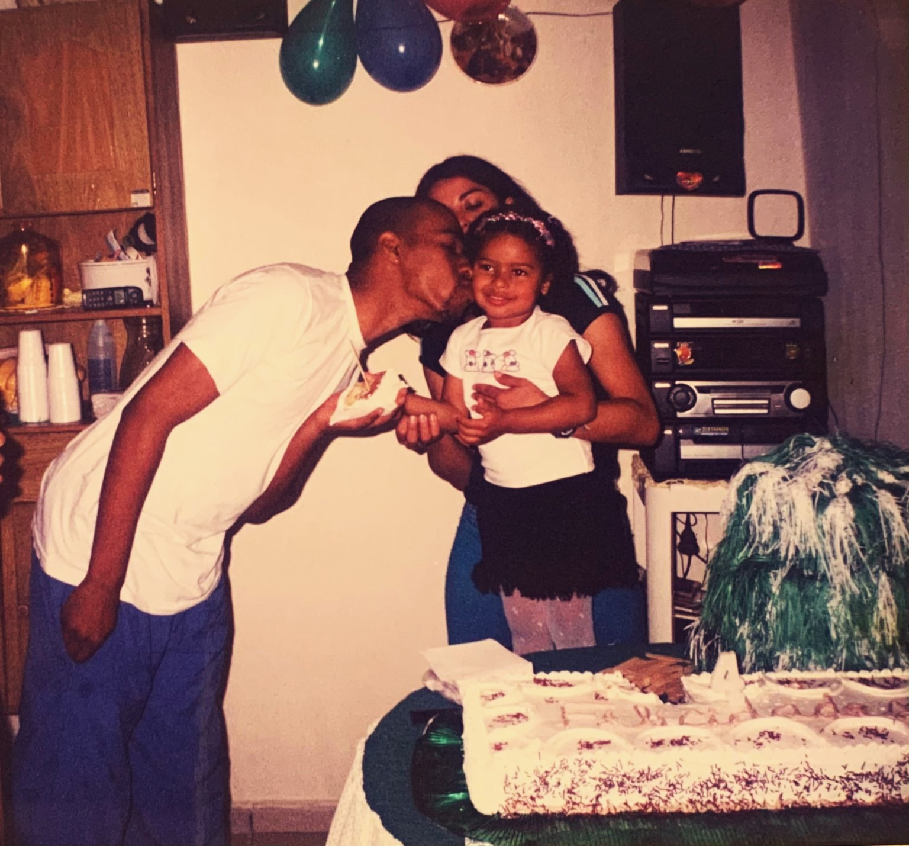
Uma iniciativa Laiá Music
Uma iniciativa Laiá Music
Este projeto é responsável por organizar, preservar e ativar o legado artístico de Edney Fernandes.
Desenvolvido pela Laiá Music, o memorial transforma memória, obra e trajetória em um sistema vivo, conectando passado, presente e novas possibilidades dentro da música brasileira.